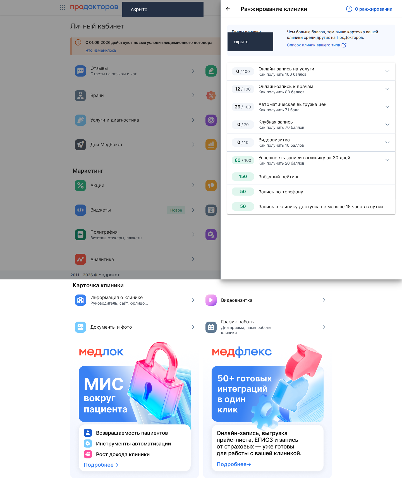
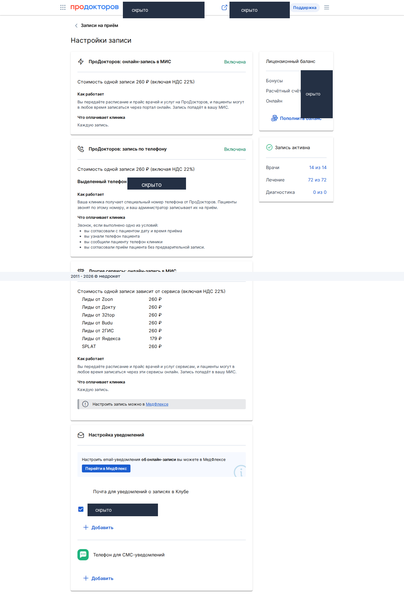
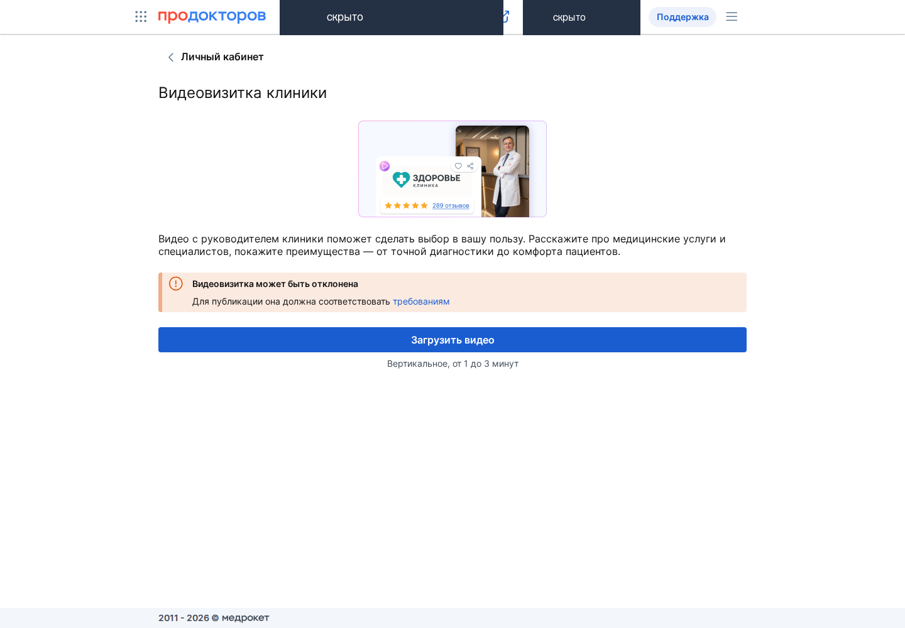
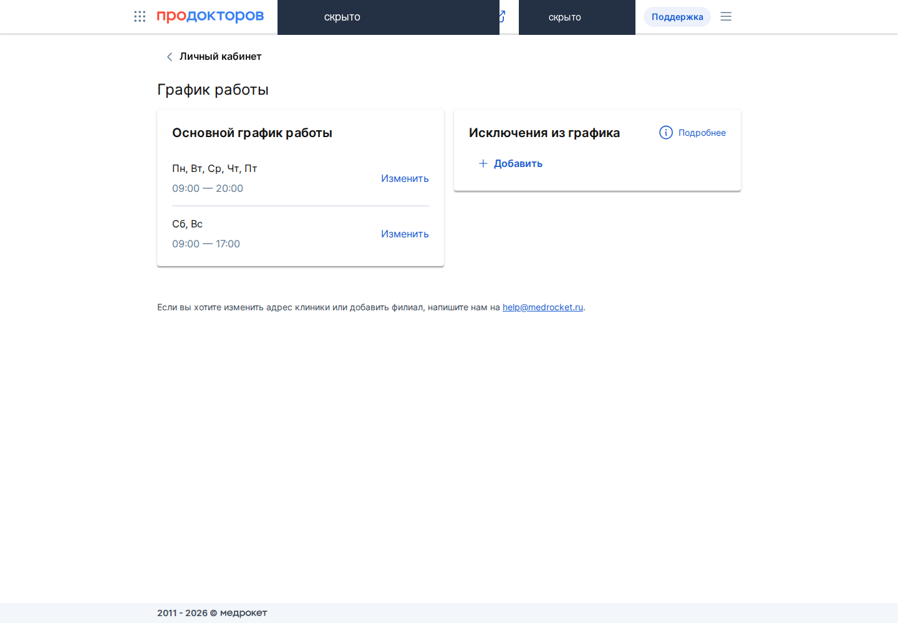
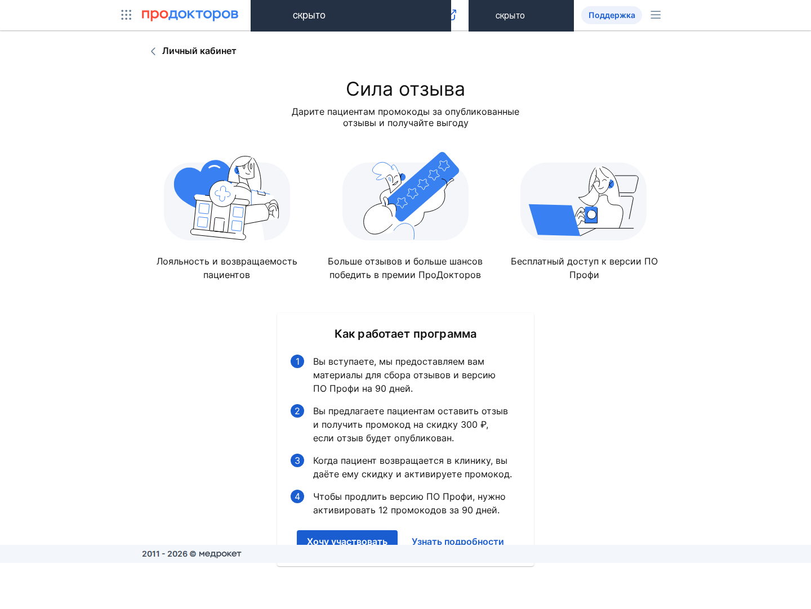
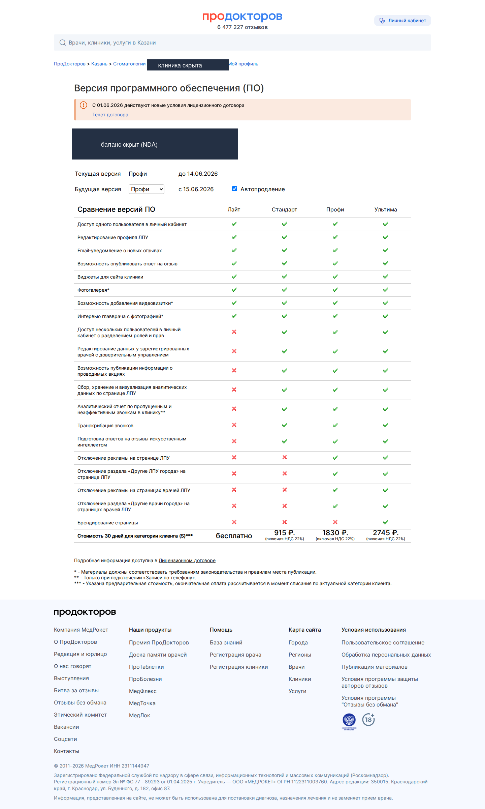
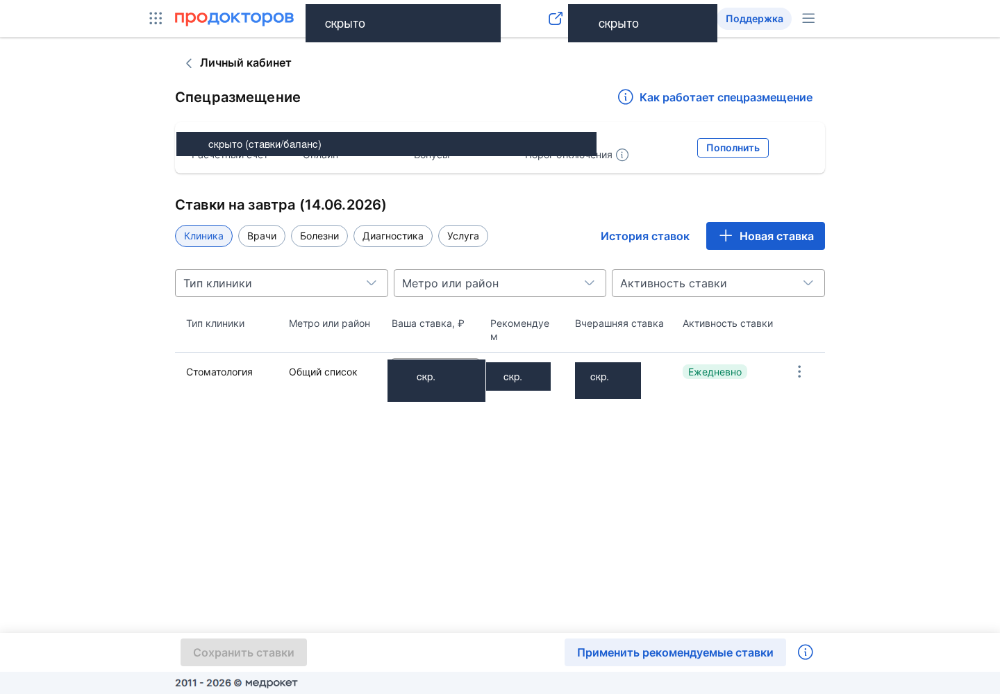
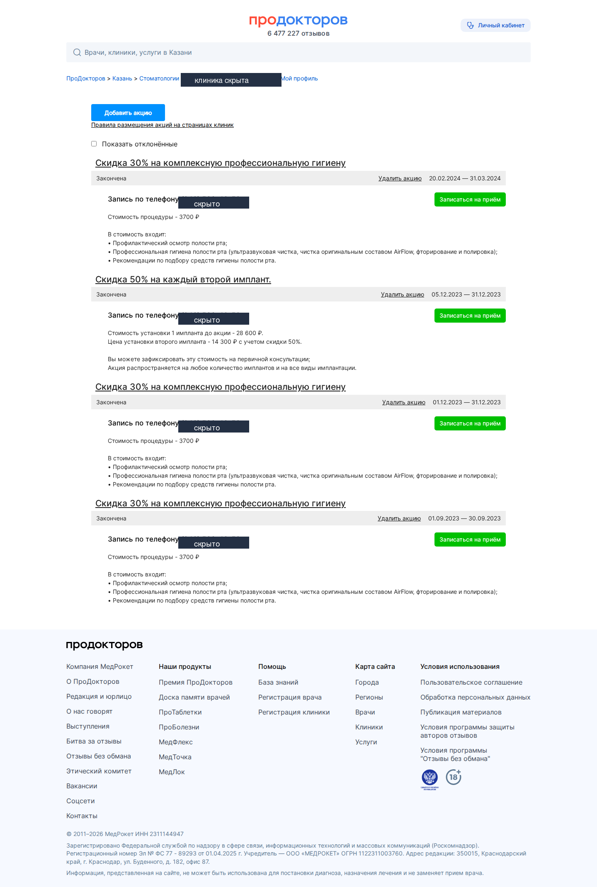
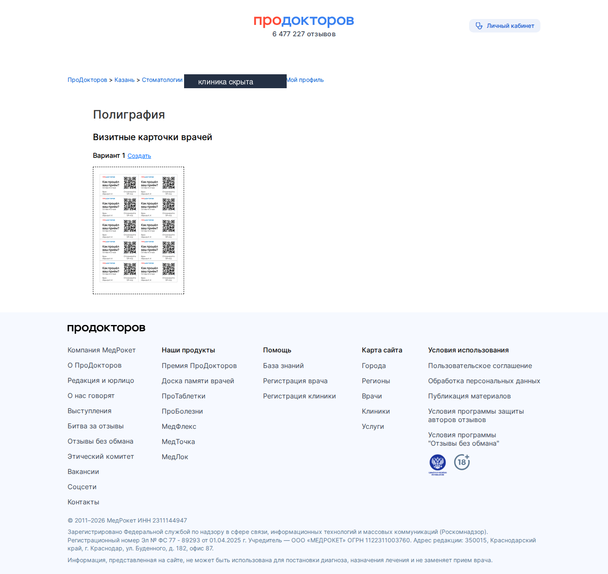

Разбор клиники на ПроДокторов · обезличенный
Обезличенный разбор: лидер рынка (Клиника А) рядом с клиникой-клиентом (Клиника Б) на ПроДокторов, плюс две клиники одной сети (В и Г) как фон. Что считывает пациент в момент выбора, какие баллы лежат недобранными и в каком порядке их забирать.
Обезличенный разбор: лидер рынка (А) vs клиника-клиент (Б) на ПроДокторов. Имена клиник, адреса и операционные данные скрыты в коды; публичные метрики — снимок с открытых карточек prodoctorov.ru на дату.Где Клиника Б стоит сейчас · карточки клиник рядом
У Клиники А (лидер), Клиники Б и обеих клиник сети В+Г на ПроДокторов одинаковая звезда — 5.0. Потолок. Значит решает не рейтинг (он у всех уже на максимуме), а две другие вещи: объём свежих отзывов и ширина карточки — сколько врачей, есть ли видеовизитка, бейдж «Выбор пациентов», блок акций. Честно: карточка Клиники А сейчас заряжена сильнее карточки Клиники Б. Но это не врождённое преимущество и не талант — это собранная процессом машина (системный сбор отзывов + полная обвязка карточки). Раз собирается процессом — значит догоняемо.
Это разбор для самой Клиники Б: показаны её собственные публичные данные рядом с лидером рынка и двумя клиниками сети В+Г. Все числа в таблице ниже — с публичных карточек prodoctorov.ru (видны любому посетителю). Числа из личного кабинета (баллы, ставки) на этой странице не используются.
Таблица · публичные карточки рядом
Только то, что видно на открытых карточках ПроДокторов. Последняя колонка — где именно карточка Клиники А заряжена сильнее и это считывает пациент в момент выбора.
| Параметр | Клиника А (лидер) |
Клиника Б (ваша) |
Клиника В | Клиника Г | Где Клиника А лучше |
|---|---|---|---|---|---|
| Рейтинг | 5.0 | 5.0 | 5.0 | 5.0 | паритет — потолок у всех |
| Отзывов | 1601 | 350 | 359 | 155 | ×4,5 к Клинике Б — главный разрыв соцпруфа |
| Врачей в карточке | 32 | 14 | 21 | 7 | больше всех — шире охват специальностей, больше точек входа |
| Медали премии | 9 | 1 | 10 | 2 | витрина доверия в шапке (у Клиники Б — одна, 2020 г.) |
| Бейдж «Выбор пациентов 2025» | ✅ | ❌ | ✅ | ❌ | у Клиники Б нет → Клиника А визуально «премия года» |
| Видеовизитка | ✅ | ❌ | ✅ | ✅ | у Клиники Б нет → теряет +10 баллов и лицо клиники в карточке |
| Акции | ✅ | ✅ | ✅ | ✅ | паритет |
| Цен-позиций в прайсе | 339 | 297 | 86 | 89 | полнее прайс → больше входов из поиска услуги |
| Фото в карточке | 28 | 19 | 5 | 4 | богаче визуальная витрина клиники |
Источник — публичные карточки prodoctorov.ru на 13.06.2026. Число отзывов на площадке нестабильно (дрейфует на несколько штук между шапкой карточки и каталогами) — берём снимок шапки на дату. Бейдж и видеовизитка — наличие/отсутствие в шапке карточки.
Что видно из таблицы: рейтинг у всех 5.0 — этим уже не выиграть. Клиника Б уступает Клинике А ровно по тем строкам, что собираются руками: отзывы, видеовизитка, бейдж, ширина прайса. По медалям Клиника В (10) даже опережает Клинику А (9) — то есть «9 медалей» это не магия лидера, а достижимый набор.
Вывод · что сильнее и чем догнать
Свести в две колонки: слева — где карточка Клиники А реально заряжена сильнее карточки Клиники Б, справа — конкретные рычаги, которыми Клиника Б это добирает. Ни один пункт слева не защищён патентом или эксклюзивом.
Главный вывод
Ничего из того, чем сильна карточка Клиники А, не уникально. Всё догоняемо машиной отзывов плюс полной обвязкой карточки.
Отзывы набираются процессом, бейдж и медали — производные от того же потока и закрытой обвязки. Клинике Б, чтобы встать рядом, нужно добрать ровно две вещи: обвязку карточки и поток отзывов. Это вопрос дисциплины процесса, а не догоняющего бюджета — при том, что звезда (5.0) у Клиники Б уже на потолке.
Обезличенный разбор. Публичные числа лидера и клиник сети В+Г — с карточек prodoctorov.ru; разбивка баллов ранжирования и ставок аукциона (данные личного кабинета) на этой странице намеренно не показаны.
Разбор Клиники Б на ПроДокторов · что добрать
Это рабочий вывод всей страницы: чек-лист по карточке Клиники Б на ПроДокторов. Догоняем не бюджетом, а донастройкой. Разбор идёт по двум частям, ровно как они и работают: первая — баллы ранжирования и обвязка карточки (общий список, бесплатные резервы), вторая — отзывы и рекламное продвижение (соцпруф и аукцион денежных услуг). Все цифры по Клинике Б — обезличенный срез её показателей на ПроДокторов на 13 июня 2026.
Часть 1 · Анализ ПроДокторов: баллы и обвязка карточки
Позиция в общем списке ПроДокторов на ~80% собирается баллами, и только ~20% — это звёзды. У Клиники Б звёзды на максимуме (5.0), но итог низкий: 371 из 730. Тянет вниз не репутация, а недобранная обвязка карточки. Ниже — разбивка по факторам и что с каждым сделать.
Главное — не перепутать рычаг
Онлайн-запись у Клиники Б УЖЕ ВКЛЮЧЕНА И РАБОТАЕТ. Проверено в ЛК 13.06: 14 из 14 врачей подключены к онлайн-записи, 72 из 72 услуги заведены, записи идут. Низкие баллы — НЕ из-за «выключенной записи». Рычаг — ДОНАСТРОИТЬ обвязку (отдельная фича «запись на услуги», цена первичного из МИС, Клуб, видеовизитки), а не «включить запись». Это разные вещи, и от этого зависит, куда направить руки.
«Сейчас» — что набрано, «потолок» — максимум за фактор, «что сделать» — конкретное действие в ЛК. Сортировка — по размеру лежащего резерва.
| Фактор | Сейчас | Потолок | Что сделать |
|---|---|---|---|
| Онлайн-запись на УСЛУГИ | 0 | 100 | Отдельная фича (запись на конкретную услугу, не к врачу) НЕ подключена. В ЛК есть кнопка «Подключить». Самый крупный резерв — +100 одним действием. |
| Автовыгрузка цен | 29 | 100 | Цена первичного приёма не тянется из МИС у 14/14 врачей (стоит 0 ₽). Починить выгрузку цены первичного из МИС → +71. |
| Клуб ПроДокторов | 0 | 70 | Выключен у 14/14 врачей. Подключить Клуб по профильным врачам → +70. |
| Онлайн-запись к врачам | 12 | 100 | Запись к врачам работает, но балл считается по числу врачей с записью: 12 из 14 (1 балл/врач). Включить запись 2 оставшимся врачам. |
| Видеовизитка | нет | 10 | Нет у 10 из 14 врачей. Записать вертикальное видео 1–3 мин (руководитель представляется) — мелкий, но быстрый резерв. |
| Профиль лечения | не указан | — | Не указан у 4 врачей. Заполнить — нужно и для корректного ранжирования по специальностям. |
| Успешность записи (30 дн) | 80 | 100 | −20 до потолка. Подтянуть долю успешных записей выше 90%. |
| Звёздный рейтинг ×30 | 150 | 150 | На максимуме (5.0). Держать поток отзывов, чтобы вес не устаревал (см. Часть 2). |
| Запись по телефону | 50 | 50 | На максимуме. |
| Доступность ≥15 ч | 50 | 50 | На максимуме. |
Источник разбивки: ЛК ПроДокторов Клиники Б (раздел «Ранжирование», 9 факторов), срез 13.06.2026 — обезличенный показатель.

Панель «Баллы клиники» в ЛК: видно, из чего собираются 730 баллов и где Клиника Б недобрала. Итог — 371/730 (обезличенный показатель Клиники Б).
Резервы выстроены по принципу «сначала то, что даёт максимум баллов без денег». Первые два шага почти бесплатны и поднимают Клинику Б с 371 в район ~700/730 — выше многих платных конкурентов.
Без денег, это настройка карточки. (а) Подключить отдельную фичу «онлайн-запись на услуги» (0→100) — в ЛК есть кнопка «Подключить»; (б) включить запись 2 оставшимся врачам (12→14). Шаг (а) переводит балл с 371 в район ~459, плюс мелкий прирост от (б). Самый дешёвый прирост в выборке.
Включить Клуб ПроДокторов (0→70), записать видеовизитки (нет у 10/14), починить выгрузку цены первичного из МИС по 14 врачам (автовыгрузка 29→100, +71), заполнить профиль лечения (не указан у 4). После шагов 1–2 Клиника Б — около ~700/730.
Держать клинику стабильно в топ-3 (сейчас 2-е место, перебивают) и включить ставки по остальным 4 врачам (задействован 1 из 5) — расширить охват в денежных услугах. Подробно — в Части 2.
Приоритет Клиники Б: донастройка записи и обвязки (~188 баллов, без денег) → Клуб + видео + цены + профиль (~150 баллов) → аукцион и врачи. Машина отзывов идёт параллельно как долгий трек (см. Часть 2).
Часть 2 · Отзывы и рекламное продвижение
Вторая часть разбора — два рычага, которые не входят в чистый балл, но решают исход: поток отзывов (глубина и свежесть социального доказательства) и рекламное продвижение (аукцион спецразмещения в денежных услугах). Клиника А выигрывает именно здесь, и оба фронта догоняемы.
Звёзды у обеих 5.0 — решает не звезда, а ПОТОК свежих отзывов (вес отзыва на ПроДокторов устаревает за ~6 месяцев). У Клиники А база соцпруфа в 4,5 раза плотнее, и она прирастает на ~100+ отзывов в месяц против рыночной нормы 10–15.
Что делать — машина отзывов «Сила отзыва». Скопировать связку Клиники А: QR-полиграфия в клинике → пациент сканирует → отзыв → промокод скидка 300 ₽ (за N промокодов клинике — ПО Профи бесплатно). Плюс сервисный обзвон после приёма со ссылкой на нужную карточку и ответ на каждый отзыв ≤24 ч (молчание снижает и балл, и конверсию). Цель — выйти на поток 100+/мес и держать его, как у Клиники А.
⚠️ Только легальный поток — иначе бан
Карательная модерация площадки
ПроДокторов — «суд, следствие и карательный орган в одном». 30–35% отзывов отклоняются даже реальные (19 причин отказа). Отвечать ≤24 ч, не имитировать отзывы, не вставлять самопиар.
Бан за накрутку — необратим
Заказные/накрученные отзывы → обнуление рейтинга + блок клиники на 3 года (врача на 1 год) + баннер «покупала отзывы». Прецедент-суд «Шифа» (Москва, май-2026): заказали ~1500 фейков → рейтинг обнулён, суд в восстановлении ОТКАЗАЛ. Любой конкурент или уволенный может донести — площадка платит жалобщику до 5000 ₽.
Вывод по отзывам: разрыв ×4,5 закрывается ТОЛЬКО легальной машиной (скидка + обзвон + QR + SEO-шаблон текста: услуга + город + ФИО врача). Накрутка — не ускорение, а самоликвидация карточки.
В денежных услугах (имплантация, брекеты) баллы не работают — топ-3 строки всегда платный аукцион спецразмещения (GSP, аукцион второй цены). Здесь у Клиники Б недобран и охват, и стабильность позиции.
По разделу «Стоматология / Общий список» (сверено с ЛК, 13.06) площадка рекомендует ~1 717 ₽/сутки, вчерашний лидер держал ~1 500 ₽ — клиника на 2-м месте (кто-то перебивает). По врачам задействован 1 из 5 (один врач в топ-1), остальные 4 ставки выключены — лежащий резерв охвата.
Денежные разделы (имплантация/ортопедия) дороже общего списка — точная ставка по разделу видна только в ЛК на дату. Тайминг правки ставки — ~22:50 МСК (last-minute перебивка забирает место), стоп на сб/вс (звонков нет — бюджет не жжём).
56 звонков → 23 успешных → 54 записи, эффективность кол-центра 5,2 мин/запись. ПроДокторов даёт подменный номер, звонок обрабатывает робот, платим за состоявшуюся запись (фикс 260 ₽/запись в городе).
Цифры дают сверку: сколько входящего реально доходит до записи и где теряется на телефоне.
Кого пускать в аукцион: только врачей, работающих ТОЛЬКО у Клиники Б. Мультиклиничный («заёмный») врач уводит лид в чужую клинику через свою карточку — за него платить нельзя.
Стратегический сдвиг — с платной «Рекламы» на органику. Клиника А держит топ-4 ОРГАНИЧЕСКИ (без метки «Реклама») за счёт баллов, отзывов и медалей. У Клиники Б — 1 медаль премии ПроДокторов (2020, устаревшая) против 9 у Клиники А (Победитель 2025 + 2024, номинант Гран-при 2025). Перевести позицию с платного спецразмещения на органический вес = добрать баллы (Часть 1) + запустить машину отзывов + взять первую свежую премию ПроДокторов через конкурс среди врачей.
| Приоритет | Рычаг | Эффект |
|---|---|---|
| 🟢 Быстро | Донастроить онлайн-запись: подключить «запись на услуги» (0→100) + запись 2 врачам (12→14) | до +188 баллов · без денег (запись уже работает) |
| 🟡 Средне | Клуб (0→70) + видеовизитки (10) + цена первичного из МИС (29→100) + профиль лечения (4) | ~+150 баллов · ≈700/730 после |
| 🟡 Средне | Запустить машину отзывов «Сила отзыва» (QR + скидка 300 ₽ + обзвон + ответы ≤24 ч) | 350 → к потоку 100+/мес |
| 🔵 Системно | Стабильный топ-3 в аукционе + ставки по остальным 4 врачам (только «свои») | охват + удержание позиции в денежных услугах |
| 🔵 Системно | Взять первую свежую премию ПроДокторов (конкурс врачей) → слезть с платной «Рекламы» | медали в шапке (vs 9 у Клиники А) · органический вес |
Одной строкой
Клиника Б догоняет Клинику А не бюджетом, а дисциплиной процесса: обвязка карточки (бесплатно, +188 баллов в один заход) + машина отзывов. Звёзды уже 5.0 — осталось добрать то, что лежит недобранным в ЛК, и поставить поток отзывов на поток.
Пошаговый алгоритм · со скринами личного кабинета
Тот же маршрут от регистрации до удержания топ-1, но проиллюстрированный обезличенными экранами личного кабинета клиники на ПроДокторов. Главный принцип — не путать две битвы: общий список идёт по баллам ранжирования, а денежные списки по услугам (имплантация / брекеты / виниры) — только через платный аукцион спецразмещения. Топ-1 «по городу» = выиграть обе сразу. Все цифры — из официального help.prodoctorov.ru + сверки с ЛК (срез 13 июня 2026). Где данные закрыты в оферте — помечено [ЛК-закрыто].
Обезличенный материал
Скриншоты ниже — из личного кабинета ПроДокторов клиники-клиента (вход клиникой, read-only, срез 13.06.2026), показаны в обезличенном виде: имя клиники, балансы счетов и операционные настройки скрыты. Оставлены только обезличенные показатели (балл ранжирования, механики карточки) — они иллюстрируют сам алгоритм работы с площадкой.
Два разных трека регистрации. Карточка врача и страница клиники проходят модерацию независимо.
Найти свою карточку → нажать «Это Вы?» → email + телефон + SMS → загрузить документы (диплом, аккредитация, фото). Модерация до суток. Подтверждение опыта (категория / степень) даёт баллы.
Добавить ЛПУ в каталог (модерация до 3 дней) → «Ваша страница?» → скачать заявление → подпись + печать → загрузить. ЛК открывается до 24 ч.
Два договора — отдельные счета:

Настройки записи в ЛК. Тумблеры «Онлайн-запись в МИС» и «Запись по телефону», подменный номер коллтрекинга и фиксированная цена записи 260 ₽ (вкл. НДС) для города. Здесь же — источники лидов (Zoon · Докту · 32top · 2ГИС · Budu · SPLAT) и блок СМС/email-уведомлений.
Подключение МИС (расписание + онлайн-запись через площадку, вход в МедФлекс логином ПД). Без этого шага не открываются ключевые баллы — это база, на которой держится позиция в общем списке.
≈400 из 730 баллов завязаны на интеграцию МИС: онлайн-запись на услуги (100) + к врачам (100) + автовыгрузка цен (100) + успешность записи ≥75% (100). Плюс завязанные сверху — свободные ячейки и доступность. Без МИС в топ не выйти.
⚠️ Если МИС не умеет автовыгрузку цен (например, Айдент) — цены грузятся Excel-шаблоном, но баллов за это не даёт.
⭐ Ключевой экран — «Баллы клиники» в ЛК. Из чего собираются 730 баллов: рейтинг ×30 (до 150), онлайн-запись на услуги (100) и к врачам (100), автовыгрузка цен (100), успешность записи ≥75% (100), Клуб (70), телефон (50), доступность ≥15 ч (50), видеовизитка (10). Текущий балл Клиники Б — 371 / 730: резерв ≈359 баллов лежит в недонастроенной обвязке (онлайн-запись на услуги 0/100, к врачам 12/100, цены из МИС 29/100, Клуб 0/70, видеовизитка 0/10) — это настройка, а не деньги.
Врач 9:16, 15–60 сек; клиника 1–3 мин, руководитель представляется. Без музыки, рекламы, контактов и пациентов в кадре — иначе отклонят.
График работы клиники в карточке. Чем шире окно приёма (с учётом исключений), тем выше балл доступности.
Загрузка видеовизитки

Экран загрузки видеовизитки + правило «вертикальное, 1–3 мин». У Клиники Б сейчас не загружена (0/10) — быстрый мелкий резерв.
График работы

Основной график (Пн–Пт 09–20, Сб–Вс 09–17) + «Исключения из графика» — иллюстрирует фактор «доступность ≥15 ч».
Наполнение профиля под максимум баллов и доверия пациента.
Звёзды (рейтинг) купить нельзя — только отзывы. Поток должен быть постоянным: рейтинг устаревает (~6 мес вес падает).

Программа «Сила отзыва» в ЛК. Механика легального сбора: QR-полиграфия → пациент сканирует → подробный отзыв → промокод 300 ₽ скидки. За набранные промокоды — ПО «Профи» бесплатно на 90 дней. Это мотор, который держит рейтинг 5.0 и подпитывает позицию.
Свой номер указать нельзя — площадка выдаёт подменный номер. Звонки обрабатывает робот, идёт запись и транскрипт (на тарифах Стандарт / Профи).
В личном кабинете (вкладки «Запись по телефону» / «Онлайн-запись» / «Все звонки») видно: количество звонков, длительность, записи, суммы, эффективность кол-центра (минут на запись). Оплата — за успешную запись по телефону (лицензионный счёт).
Балансы не пересекаются. Лиды и ПО — один счёт, продвижение — другой.
| Лицензионный счёт | Рекламный счёт |
|---|---|
| Онлайн-запись — 3,7% от стоимости услуги (коридор по городу; в этом городе = фикс 260 ₽/запись, Яндекс-лиды 179 ₽) | Спецразмещение — аукцион GSP (топ-3) |
| Запись по телефону (за успешную) | Баннеры (за показы) |
| Клуб ПД — сбор 10% от клубной цены | |
| ПО: Лайт (беспл) / Стандарт / Профи (подписка 30 дн) |
Город с фиксированной ценой записи (подтверждено в ЛК 13.06): 260 ₽ за состоявшуюся запись (онлайн-запись ПД / запись по телефону / лиды Zoon · Докту · 32top · 2ГИС · Budu · SPLAT — все 260 ₽), Яндекс-лиды 179 ₽ (с НДС). Формула «3,7%» — это коридор min/max по городу; здесь он схлопнут в фикс 260 ₽. Списывается за состоявшуюся запись, 0 ₽ при отмене. ЛК ПД + help

Тарифы ПО в ЛК — лицензионный счёт. Сравнение Лайт / Стандарт / Профи / Клиника по функциям; цены 915 / 1830 / 2745 ₽. На «Профи» открывается запись/транскрипт звонков и скрытие рекламы конкурентов с карточки.
Аукцион GSP (второй цены): три высшие ставки берут места, победитель платит ставку следующего. Блок — максимум 3 места, на сутки. Рекомендованная = вчерашняя ставка 1-го места +1% (цена естественно разгоняется).
Сверено с ЛК (13.06): по вкладке «Спецразмещение → Клиника» за общий стом-список города площадка рекомендует ~1 717 ₽/сут, вчерашний лидер держал ~1 500 ₽ (2 место). Денежные разделы (имплантация, ортопедия) дороже общего списка — точная ставка по разделу тоже видна только в ЛК на текущую дату. Фиксированного «прайса на место» нет: цена динамична и складывается аукционом.
Принцип цены: спецразмещение — это аукцион второй цены (GSP), а не тариф. Рекомендуемая ставка = вчерашняя ставка лидера +1%, поэтому площадка сама постоянно разгоняет цену. Точную рабочую ставку по своему разделу и городу смотрят только в ЛК на дату — по другим городам и разделам числа свои. По общему стом-списку рекомендуемая ~1 717 ₽, вчерашний лидер ~1 500 ₽ (2 место) — резерв удержания топ-1.

Вкладка аукциона «Клиника» в ЛК. Список рекламных мест по специальностям, текущие ставки и кнопки управления — это и есть GSP-аукцион за топ-3. Рекомендованная ставка = вчерашняя топ-ставка +1 ₽; подача до 23:00 МСК на завтра.
Общий список — по баллам, денежные списки по услугам — по аукциону. Топ-1 «по городу» = обе битвы выиграны сразу.
Сводный чек-лист топ-1
Дополнительные инструменты карточки
Помимо восьми шагов, в кабинете доступны разделы, которые добирают «мягкие» баллы и работают на конверсию карточки: акции со скидками и полиграфия для офлайн-сбора отзывов и доверия в клинике.
Акции клиники

Раздел «Акции» в ЛК. Создание акций со скидками прямо в карточке — конверсионный элемент (как тест-драйв услуги у конкурента).
Полиграфия

Раздел «Полиграфия» в ЛК. Визитки врачей и QR-материалы под офлайн-сбор отзывов в клинике — топливо для «Силы отзыва» (шаг 4).
Трудности и риски
Обратная сторона площадки. Эти рычаги работают одинаково и против конкурента, и против вашей клиники — учитывать при планировании канала.
Карательная модерация — главная боль
Фейк-отзыв от конкурента (заказывается за ~1 000 ₽) → жалоба → обнуление рейтинга и блок: клиника на 3 года, врач на 1 год + баннер «покупала отзывы». Площадка платит жалобщику до 5 000 ₽ — это стимулирует доносы конкурентов и уволенных. Откатить нельзя (прецедент-суд в восстановлении рейтинга отказал).
Ловушка зависимости
Кейс: 45% записей через площадку → комиссию подняли до 32% → −12% маржи, отказаться уже нельзя. Красный флаг — доля агрегатора выше 40% записей. Плюс 30–35% отзывов отклоняются (даже реальные), а холодные лиды доходят не все.
Все шаги — из официального help.prodoctorov.ru. Ставки, тайминг 22:50 и правило выходных сверены с открытыми источниками по площадке. Скрины — из ЛК клиники-клиента (срез 13.06.2026), показаны в обезличенном виде. Где данные закрыты в оферте — помечено [ЛК-закрыто], не выдумано.